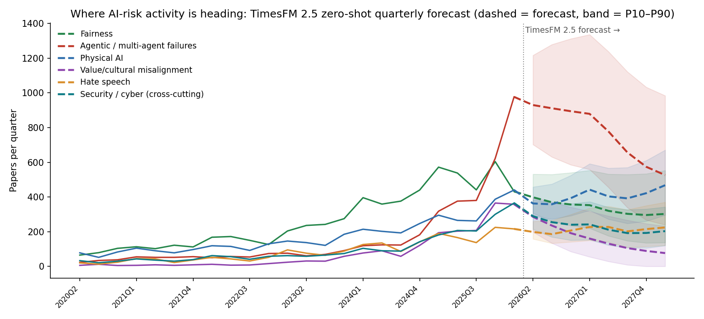
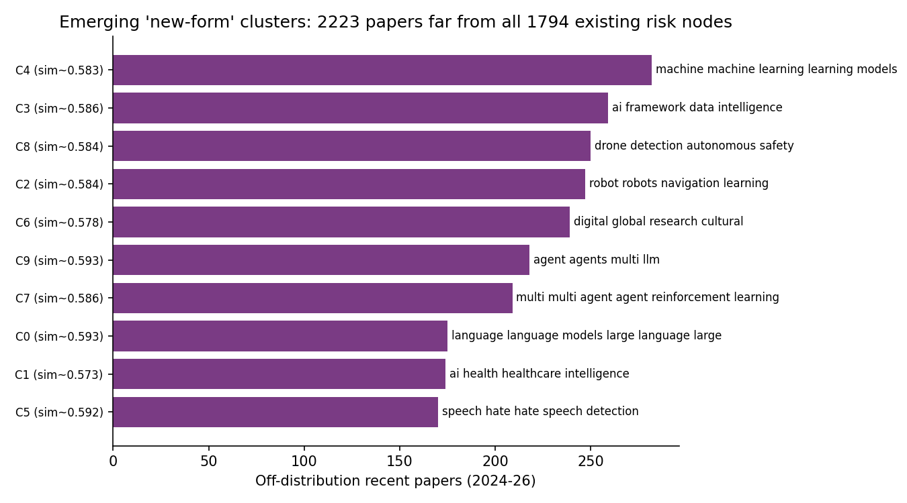

An exploratory two-method pipeline over the project's 1990–2026 AI-risk corpus (26,943 records across five collected risk domains). Method 1 (TimesFM 2.5) forecasts where research-and-incident activity is heading by extrapolating per-domain quarterly volume. Method 2 (BGE-M3 novelty detection) surfaces candidate new forms — recent papers that sit far from every catalogued risk node. The two are complementary: forecasting handles magnitude and timing of known domains; novelty detection flags under-catalogued shapes a forecaster cannot invent.
Two passes over the same corpus, then read together.
Each risk domain becomes a quarterly count series (papers per quarter, 1990Q1–2026Q1). Google's TimesFM 2.5 (a 200M-parameter decoder-only time-series foundation model) forecasts the next 8 quarters zero-shot — no task-specific training — with P10–P90 quantile bands. The partial 2026Q2 quarter is held out of history. This answers which existing domains intensify or cool.
Every 2024–26 paper is embedded with multilingual BGE-M3 and scored by its maximum cosine similarity to all 1,794 catalogued L4 risk nodes. A low max-similarity means the paper fits no existing risk — a candidate new form. The off-distribution tail is clustered (k-means) and labelled by TF-IDF keywords. This answers what shapes are not yet in the taxonomy.
Stack: timesfm 2.5 (torch) · BAAI/bge-m3 sentence-embeddings · scikit-learn k-means/TF-IDF. Corpus: integrated_ai_risk_papers_all_domains_broad.csv.
History through 2026Q1 (solid); forecast 2026Q2–2028Q1 (dashed); shaded band = P10–P90.

| Risk domain | Run-rate (last 4q avg) |
Forecast 2026Q2 |
P10–P90 2026Q2 |
Forecast 2028Q1 |
Trajectory |
|---|---|---|---|---|---|
| Agentic / multi-agent failures | 589 | 930 | 702–1217 | 526 | ▲ accelerating (steepest; widest band) |
| Physical AI | 338 | 363 | 290–458 | 468 | ▲ steady growth |
| Security / cyber (cross-cutting) | 269 | 290 | 214–385 | 203 | → stable (near-term rise, then easing) |
| Hate speech | 186 | 198 | 158–260 | 224 | → stable |
| Fairness | 504 | 398 | 306–532 | 302 | ▼ cooling (off its peak) |
| Value / cultural misalignment | 283 | 286 | 198–398 | 77 | ▼ declining |
Read: the clearest signal is agentic / multi-agent failures — the only domain forecast well above its own recent run-rate (~930 vs 589 papers/quarter), after a 123→977 surge over the last eight quarters. Physical AI grows steadily; fairness and value/cultural work is past its peak in this corpus. The agentic band is also the widest, so the level is uncertain even though the direction is clear.
On the security / cyber line: unlike the five collected domains, this is a cross-cutting slice derived by keyword-matching the whole corpus (cyber, adversarial, malware, vulnerability, exploit, jailbreak, poisoning, backdoor, malicious use, weaponisation, …; n=3,376). It therefore overlaps the other domains — most of its mass comes from agentic (1,636) and Physical AI (820) work — and is shown as an analytical lens, not an independent collection. It rose sharply (88→365 papers/quarter over the last two years); TimesFM projects a mild near-term rise (~290) then easing to ~203 by 2028Q1, within a wide 214–385 band.
Recent papers (n=14,817) ranked by distance from all 1,794 existing risk nodes; off-distribution tail clustered into candidate emerging forms.

Honest baseline: the taxonomy already covers recent literature well — median max-similarity is 0.669 and only 18 of 14,817 papers fall below 0.50. Truly novel forms are therefore rare; the clusters below are the relatively least-covered shapes (max-similarity ~0.57–0.59), ordered by how far they sit from the catalogue.
| Cluster (keywords) | n | avg sim |
Nearest existing L1 | Reading |
|---|---|---|---|---|
| Healthcare AI risk · health, healthcare, clinical | 174 | 0.573 | AI system safety, robustness & control | Most off-distribution — clinical/health deployment harms thinly catalogued. |
| Digital / global / cultural governance | 239 | 0.578 | Socioeconomic, labor, cultural & environmental harms | Global-South, cultural & digital-divide framings. |
| ML-method-as-risk-surface · machine learning, models, data | 282 | 0.583 | AI system safety, robustness & control | Method papers treated as risk vectors. |
| Robot navigation / RL | 247 | 0.584 | Physical AI Risk | Embodied-control edge of Physical AI. |
| Drone / autonomous-vehicle safety | 250 | 0.584 | AI system safety, robustness & control | UAV & AV detection/inspection safety. |
| AI frameworks / governance scaffolding | 259 | 0.586 | AI system safety, robustness & control | Cross-domain framework papers. |
| Multi-agent RL coordination | 209 | 0.586 | AI system safety, robustness & control | Echoes the agentic forecast signal. |
| LLM-specific harms · large language models | 175 | 0.593 | AI system safety, robustness & control | LLM-native failure modes. |
| Agentic / LLM agents · agents, multi-agent, llm | 218 | 0.593 | AI system safety, robustness & control | Reinforces agentic as the frontier. |
| Hate-speech / social-media detection | 170 | 0.592 | Discrimination and harmful content | Mostly catalogued; near the cut. |
Read: the agentic / LLM-agent clusters recur here, agreeing with Method 1's signal. Beyond that, the two furthest shapes are healthcare-AI risk and digital/global/cultural governance — the strongest candidates for new taxonomy nodes.